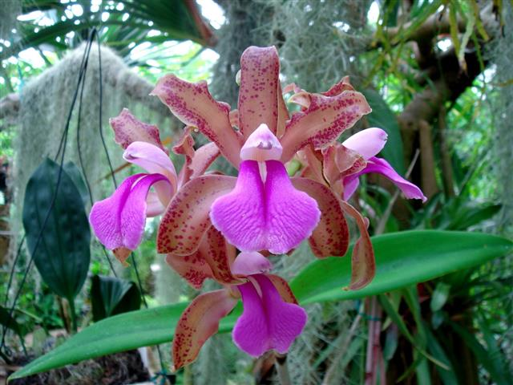

Sản phẩm tiêu biểu

Hoa thủy tiên
Bí quyết ép hoa thủy tiên nở đúng đêm Giao thừa Thứ Tư, ngày 07/01/2015 00:06 AM (GMT+7) Sự kiện: Tết Nguyên Đán 2017 Để thủy tiên nở hoa không khó nhưng để cây đạt đến độ hoàn hảo về sắc, về hương thì đòi hỏi người chơi phải cực kì tỉ mẩn. Từ xưa, mỗi độ Tết đến, Xuân sang, những gia đình người Hà Nội lại bảo nhau mua củ thủy tiên về cắt gọt, tỉa tót để tạo ra những bát thủy tiên may mắn cho năm mới. Những người sành chơi thủy tiên phải cầu kì đếm ngày để sao cho bát hoa nở đúng chính Tết, trước hoặc sau Tết đều được coi là thất bại, lại phải chờ đợi một năm nữa để phục thù. bi quyet ep hoa thuy tien no dung dem giao thua - 1 Thủy tiên đẹp một cách thanh tao, được ví như "chén ngọc đĩa ngà". Bông hoa thủy tiên có vành ngoài trắng muốt, nhụy vàng ruộm tỏa hương thơm ngát. Hoa thủy tiên chơi Tết phải đẹp cả hoa, lá, rễ, củ và hương. Sau một vài năm bị lãng quên, những năm gần đây, thú chơi thủy tiên lại quay lại. Những người chơi hoa cho biết phải rất cầu kì mới chăm được thủy tiên. Để có hoa to, đẹp, lá xanh và bền, ngày nào cũng phải lau và thay nước. Ngoài ra còn phải tính toán sao cho đến giao thừa thì hoa nở được một vài bông lấy lộc. bi quyet ep hoa thuy tien no dung dem giao thua - 2 Còn hơn một tháng nữa là bước qua năm mới, chị em hãy cùng gọt củ thủy tiên để tạo ra những hình dáng đẹp như ý. Bước 1: Chuẩn bị - Củ thủy tiên: Củ hoa tốt là củ hoa to, mập, xốp, cân đối và không có quá nhiều nhánh. Hiệnnay giá một củ thủy tiên khoảng từ 25.000 - 35.000đ. - Các dụng cụ bi quyet ep hoa thuy tien no dung dem giao thua - 3 Bước 2: Làm sạch - Củ thủy tiên có nhiều lớp vỏ giống hành tây, bao gồm một củ chính lớn nhất và những mầm sườn nhỏ ỏ xung quanh. Thân củ màu trắng sữa, vầng rễ già màu vàng ở đáy củ còn lớp rễ sau mọc ra sẽ có màu trắng muốt như sợi râu ông bụt. Ở giữa củ là lá non và các tia hoa nằm thẳng hàng. bi quyet ep hoa thuy tien no dung dem giao thua - 4 - Khi đem về phải bóc bỏ lớp đất ở đáy củ và các bẹ lá khô. Sau đó ngâm nước 48 tiếng cho vỏ cũ hút nước căng mọng cho dễ gọt. bi quyet ep hoa thuy tien no dung dem giao thua - 5 Bước 3: Bóc vỏ - Lấy dao cẩn thận tách từng lớp vỏ bi quyet ep hoa thuy tien no dung dem giao thua - 6 - Khía dao một đường tròn quanh củ, cách rễ khoảng 1cm. bi quyet ep hoa thuy tien no dung dem giao thua - 7 - Nhẹ nhàng bóc tách từng lớp, từng lớp của củ thủy tiên. Khi đến gần giữa củ thì nên cẩn thận hơn để tránh cắt vào các bao hoa, cuống hoa và lá. bi quyet ep hoa thuy tien no dung dem giao thua - 8 - Các mầm sườn cũng bóc vỏ như với củ chính. bi quyet ep hoa thuy tien no dung dem giao thua - 9 Bước 4: Bóc bào mầm - Khoét sâu các khe giữa bào mầm bằng dao vát rồi dùng mũi dao nhẹ nhàng rạch bào mầm để lộ lá và hoa. Chị em nên rạch một đường từ trên xuống dưới bên cạnh bào mầm trước thay vì rạch ở chính giữa. Thao tác này cần cực kì khéo léo vì khi gọt củ thủy tiênchỉ cần mạnh tay một chút thôi là củ hoa sẽ bị tịt. bi quyet ep hoa thuy tien no dung dem giao thua - 10 Bước 5: Xén lá - Việc xén lá thủy tiên giúp tạo hình để lá không mọc thẳng lên che lấp mất hoa. Một chậu thủy tiên đẹp thì lá nên mọc thấp và uốn lượn đẹp mắt ở phía dưới. Dùng dao xén dọc theo chiều dài của lá cho tới tận cuống lá. Để tạo cong hình móc câu thì gọt, cạo một chút đằng sau lá từ ngọn lá cho tới giữa lá hoặc tới gốc lá. Còn khi xén lá đi từ 1/3 tới 1/2 độ rộng của lá từ ngọn lá cho tới gốc lá sẽ được hình vòng tròn. bi quyet ep hoa thuy tien no dung dem giao thua - 11 Bước 6: Làm sạch - Sau khi gọt củ thủy tiên xong phải vệ sinh sạch sẽ và ngâm củ thủy tiên vào nước. - Thủy tiên cần nước sạch và trong, nếu dùng nước máy thì phải để vài ngày trước khi sử dụng cho bay hết hơi clo. Cứ khoảng 8 tiếng thì dùng chổi bông cọ rửa và thay nước một lần trong hai ngày đầu tiên. - Nếu nước có hiện tượng vẩn đục phải xem củ có bị thối hay không. Nếu có, cắt bỏ phần thối và rửa bằng nước muối loãng. bi quyet ep hoa thuy tien no dung dem giao thua - 12 Bước 7: Thủy dưỡng - Sau 2 ngày, đưa củ ra chậucần đưa củ hoa ra chậ. Đặt củ nằm ngang và hướng mặt cắt gọt lên trên đồng thời phủ một lớp bông, vải len hay giấy ướt lên mặt cắt để tránh củ bị thâm đen. bi quyet ep hoa thuy tien no dung dem giao thua - 13 - Sau 3-4 ngày các vết cắt liền sẹo thì mới đưa ra ngoài trời. Tuy nhiên, tránh ánh nắng trực tiếp, mưa gió. Hàng ngày, cần thay nước sạch và chú ý tạo hình lá, hoa theo ý muốn. bi quyet ep hoa thuy tien no dung dem giao thua - 14 Bài liên quan: Trồng hoa Tiên Ông không khó, mang an khang đến nhà 5 bước trồng Tulip nở đúng đợt Tết về Chị em rộn ràng trồng hoa kịp bung nở tươi tắn ngày đầu năm Bước 8: Chăm sóc - Thông thường, thời tiết ở miền Bắc sẽ gọt củ thủy tiên vào khoảng từ mùng 5 đến mùng 9 tháng Chạp. Trời nóng ẩm thì nhanh hoa, trời lạnh thì chậm hoa - đây là nỗi băn khoăn của những người sành chơi khi quan niệm xưa cho rằng hoa thủy tiên nở đúng giao thừa sẽ mang lại may mắn cho cả năm. - Chúng ta có thể điều chỉnh nhiệt độ để phần nào ra hoa đúng dịp như ý muốn. Nếu cần ra hoa sớm thì ngâm hoa nước ấm, ban ngày phơi nắng, bam đêm che giấy rồi dùng đèn chiếu sáng. Nếu củ ra hoa muộn thì ngâm ở nước lạnh 15oC, và để ở chỗ tối, râm mát. Chúc các bạn thành công và có nhiều lộc trong năm mới với cây hoa thủy tiên nở đúng đêm giao thừa!
Sản phẩm bán chạy
-

Hoa mộc lan có ý nghĩa tượng trưng cho sự cao quý, vẻ đẹp lộng lẫy, tráng lệ.
-

Hoa phong lan: ý nghĩa vể tình yêu cao cả, vẻ đẹp cao quý đến niềm tin về một tương lai tươi sáng.